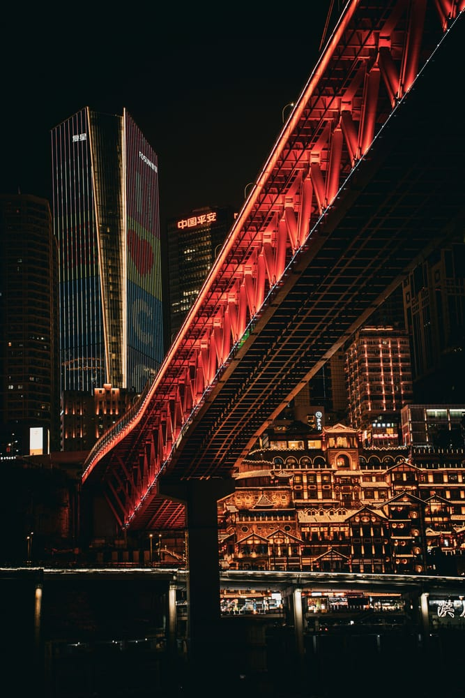
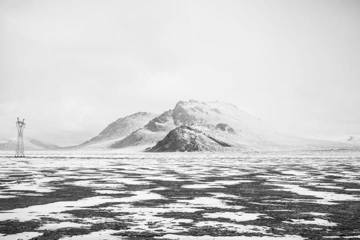
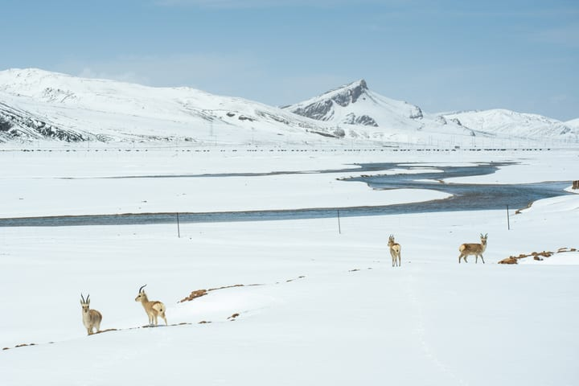
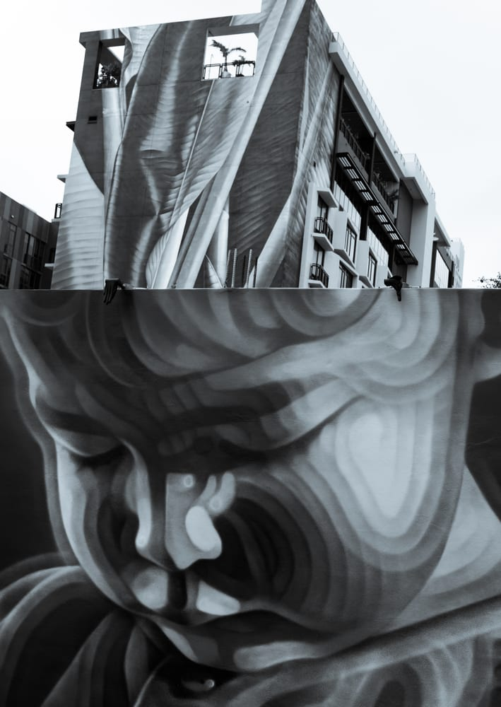

MELD
2026One detector, multiple questions: AI text detection, generator attribution, rewrite identification, and token-level localization.
PhD researcher at Cornell Tech & Weill Cornell Medicine.
I work on multimodal models that reason with visual and structured evidence. Currently exploring VLM post-training, reinforcement learning, and 3D grounding.
Models, methods,
and open source.
One detector, multiple questions: AI text detection, generator attribution, rewrite identification, and token-level localization.
A generalist vision-language model for grounded dental image understanding, spanning radiographs, photographs, and 3D CBCT.
Synthetic vasculature and pathology for better medical VLM reasoning. A dataset of 100K image–text pairs.
Connecting vision-language models with graph knowledge for explainable medical image analysis.
Evidence-based ensembles for uncertainty-aware brain parcellation using diffusion MRI.
A little more
hands-on.
Explore AI-generated text detection and token-level predictions.
Open demoRun GFT with your own environment, model checkpoint, and data.
Follow the repository installation guide and prepare the Stage 2 checkpoint, then launch:
python -m gft.inference.deploy --model checkpoints/stage2PhD, Electrical & Computer Engineering. Advised by Johannes C. Paetzold and Mert R. Sabuncu.
Machine Learning Intern · VLM post-training and reinforcement learning.
Joint undergraduate programme in electronic engineering. First-class honours.
Research internship in component traceability and resource management.
Places, light,
and geometry.




A FEW FRAMES FROM MY CAMERA ROLL © MATT LI